孖仔帮
公众号ID：twinsbang
关注
文|圆圈妈
网图|侵删
如果你看到标题就毫不犹豫点进来看这篇推文，那说明你可能潜意识觉得自己疑似或者真的是有强迫症。
那到底是不是呢？我们来简单做个小测试吧。
老是怀疑门没有锁。
发呆时一次次在桌面上右击刷新或刷新页面。
删除文件后，一定要清空回收站。
调音量一定要调到自己顺眼的数字。
睡觉前一定要将拖鞋摆放整齐。
离开一个地方之前要上上下下左左右右的看两遍以上。
反复检查记录下的东西或填写的表格。
喜欢挤那种带泡泡的塑料纸。
戴耳机的时候必须看清了左右才戴。
电脑桌面的图标一定要按照一定的排列顺序。
...
以上你中了几条？
不好意思，我竟然全中！
我一直觉得，因为我是巨蟹座女生，平时会有点胡思乱想而已，从来没想过，也不愿意承认自己有强迫症，直到我的双胞胎出生。
有了双胞胎之后，家里总是一团乱，曾经以为的岁月静好，最后都变成了一地鸡毛。
双胞胎家庭果然另类到没朋友，日常用品是普通二胎家庭的N倍：奶粉，辅食，药品，护肤品，口水巾，干湿纸巾，毛巾，衣服袜子帽子鞋子...1岁的，2岁的，3岁的....
东西太多了，经常让人会犯晕，分不清。难怪婆婆有时会给圆圆洗两次澡，而圈圈却一次都没洗。
哎，家有双胞胎的后遗症之一：所有家庭成员都会在俩个娃同时轰炸的作用下，出现不同程度的【不正常】情况。
莫说老人家，连我自己有时候孕傻来了，也常常把奶粉勺当汤勺丢进消毒柜里，把宝宝用的洗护用品当隔离霜涂在脸上..../囧!
没办法，东西实在太多太杂太乱了，4个大人的，2个小孩的日常用品，全都混在一起，又没有时间分门别类地收纳整理。
偏偏我还给自己找虐，美其名曰：双胞胎嘛，当然要所有东西都一模一样啦，生活用品也不例外。好啦，给现实打脸了！
果然养双胞胎不能靠情怀，不能讲文艺，更不能看心情，不然就真是作孽啊！我发誓，给双胞胎买一模一样的日用品是我迄今为止做过的最坑人最坑己的一件蠢事。
比如：同款同色的奶瓶，平时混着用，没啥问题，遇上其中一个娃生病就犯难了，要隔离，要做记号，要区分，还要分开消毒，麻烦事一大推，乱上加乱。
还有更让人忍受不了的是，满屋子的脏乱差...
每天下班进家门迎接我的是随处丢在一旁的尿不湿，沾有便便的纸巾...衣服东一堆西一堆，也不知道是干净的还是脏的，用完的奶粉罐散落在客厅角落，有些还发霉生锈了...
每当这时，心情就特别烦躁，特别沮丧，此时若是两个娃一起哭闹，同时索抱，那种感觉就更绝望了。
久而久之，我觉得自己变了，变得更加不可理喻了，事事斤斤计较，总爱生闷气，婆婆只是漏了给其中一个娃吃鱼肝油（因为她记不清到底哪个吃了哪个没吃），我竟然能气到吃不下饭；还总是抱怨公婆不讲卫生，饭菜做不好吃，娃又带不好。
这种不满的情绪和消极的心态让我整天睡不好也操碎了心，还总因为奶粉的配比，药的计量，辅食添加量这些琐事与婆婆闹矛盾。
圆圈哥俩1岁＋，轮状病毒感染，上吐下泻还发烧，要多次适量补给口服补液盐，婆婆可能眼花没搞清楚药的剂量，给他们喝多了，这让我终于与婆婆“兵戎相见”，整整冷战了一个月。
圆圈2岁10个月，我辞职了，成为了全职妈妈。自己经历过一对2那种双打混战的局面后，才知道当年公婆二人带俩娃的艰辛。
我时常为自己当年对婆婆的各种挑刺和不理解感到愧疚不已，特别是在圆圈哥俩同时生病，又没人搭把手的时候，那种内疚感就特别强烈。
经历过才知道，有孩子的家庭，所有人都难，主要照顾孩子的那个人更难！
然而，生活还得继续，明知自己有强迫症，那就得治，明知家里有两只破坏能力超强的四角吞金兽，那就得管。
上个月，就在我发愁俩娃那堆积如山的玩具如何收纳整理时，圆圈爸买了一个居家收纳神器：井井标签机。
这位长期处在老妈，老婆，两儿子的夹缝中生存的双胞胎爸爸曾经伤痕累累，现在早已身经百战了。
他说，带娃的时候把家里收拾得有条不紊是减少家庭矛盾和自我不良心情的秘诀之一。
总结很精辟，实际呢？也确实很管用！
我没想到的是，这个小小的收纳小神器，真的让我们从此过上了井井有条的生活。
明明可以靠颜值，偏偏却用实力俘获了所有全职妈妈的芳心，说的就是它了。
这款标签机编辑简单，防水防油，贴得牢又不留胶。外形可爱，实用满分，真是居家收纳的必备神器。
左右滑动查看更多
用了一段时间后，真的是越看越喜爱，不断地感慨，要是以前早知道有这神器该多好啊！有了井井标签机，养育双胞胎的日子其实也可以岁月静好的。
有了它，我可以把他们的奶瓶贴上个性化图案，便于区分，再也不担心搞混了；
有了它，我可以给奶粉贴上开封日期及配比方式，超级适合我们这种纯配方奶喂养双胞胎的家庭；
有了它，我可以给辅食贴上日期和保质期，及每天的添加量，孩子们的日常吃喝，随时都掌握于心，让我能安心上班去。
有了它，我可以给两人各自的药品贴上标签，哪些可一起吃，哪些需分开吃，都做好区分，再也不担心给他们吃错药了 ；
有了它，我可以和孩子们一起给玩具图书做分类标识，培养他们的自我管理能力，再也不是我一个人孤零零悲戚戚地收玩具了；
有了它，交给老人家的事情就一目了然...再也不用纠结着态度问题，对家人的千叮万嘱，还不如一贴了然，白字黑字，最清楚了。
好在，现在拥有它也不晚，正是时候，当了全职妈妈后，除了每天搞两个娃，还有生活中的那些油盐柴米酱醋茶。
有了标签机，真的给我的育儿生活带来很多便利，好多容易忘记的事儿都可以标记起来，变得井井有条。
给厨房的瓶瓶罐罐贴上标识▲
给冷冻食品贴上日期和名字，能不能吃，一看就知▲
给干货贴上名字与日期，干货储藏，随拿随取▲
给鞋盒贴上贴上鞋子的品牌和名称，方便拿取▲
给数据线，插头贴上电器名称，不用错，不拔错，不拿错▲
为化妆品 贴上分区，梳妆台整洁又一目了然▲
我们的双胞胎社群经常有妈妈调侃，家有双胞胎等于进入了白垩纪时代。
简直不能太赞同！
家里的那一对双儿，某种程度上，的确是像极了白垩纪时代的化骨龙。
他们的破坏能力是侵蚀性的，可深入到家里的每一处角落，所到之处都是毁灭性的翻车现场。
也许是麻木了，也许是长记性了，也许是经历过大风大浪了，那些曾经让我抓狂不已的杂乱繁琐，现在对我而言，都已经小菜一碟，手到擒来了，另有居家神器标签机的辅助，所有事情都能瞬间变得井井有条，我的强迫症也减轻了不少。
给目前正处在水深火热中无法自拔的小白双胞胎妈妈的建议是：不要只记得与双胞胎孩子之间的那些鸡飞狗跳，却忘记了和孩子们共度的美好时光。这款井井标签机将是强迫症的你，最后的倔强。
小小的它，也许可以减缓你的浮躁，化解你的焦虑，舒缓你的强迫症，让每一天都有闲情逸致去经历，去感受与孩子们相处的每个瞬间，相信这些都会是日后最美的回忆。
关于当了双胞胎妈妈，你一定还有哪些强迫症的症状，现在就在评论区告诉我吧！
想要一个无硝烟，无名火，无战场，井井有条的育儿生活？
那就把这个颜值高，实力强的居家小神器带回家吧！
这是强迫症的你，最后的倔强哦！
【井井标签机小元气家用打印机】
淘口令
0/￥mw8SXX0gRnC/
-END-
今日互动话题
#只有双胞胎妈妈才懂的强迫症，你知道哪些？#
评论区聊一聊呗！
微信公众号：孖仔帮
ID : twinsbang
专注双胞胎孕育，养育，教育经验分享
扫码关注我们
点一下你会更好看耶

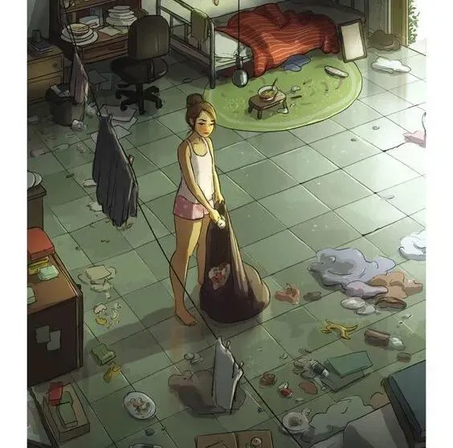
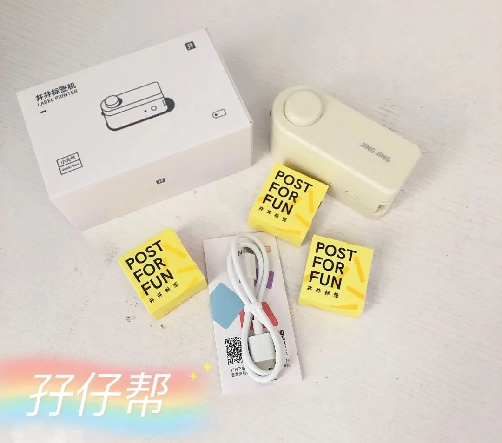
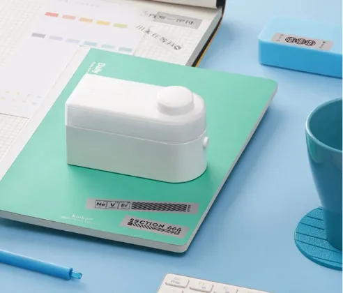
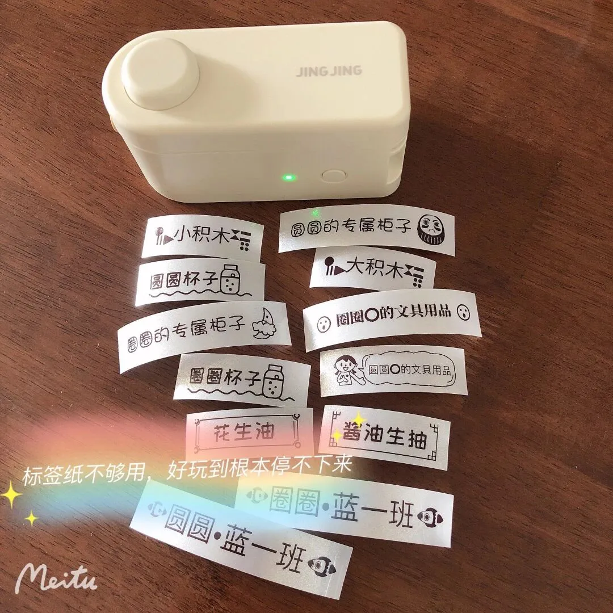
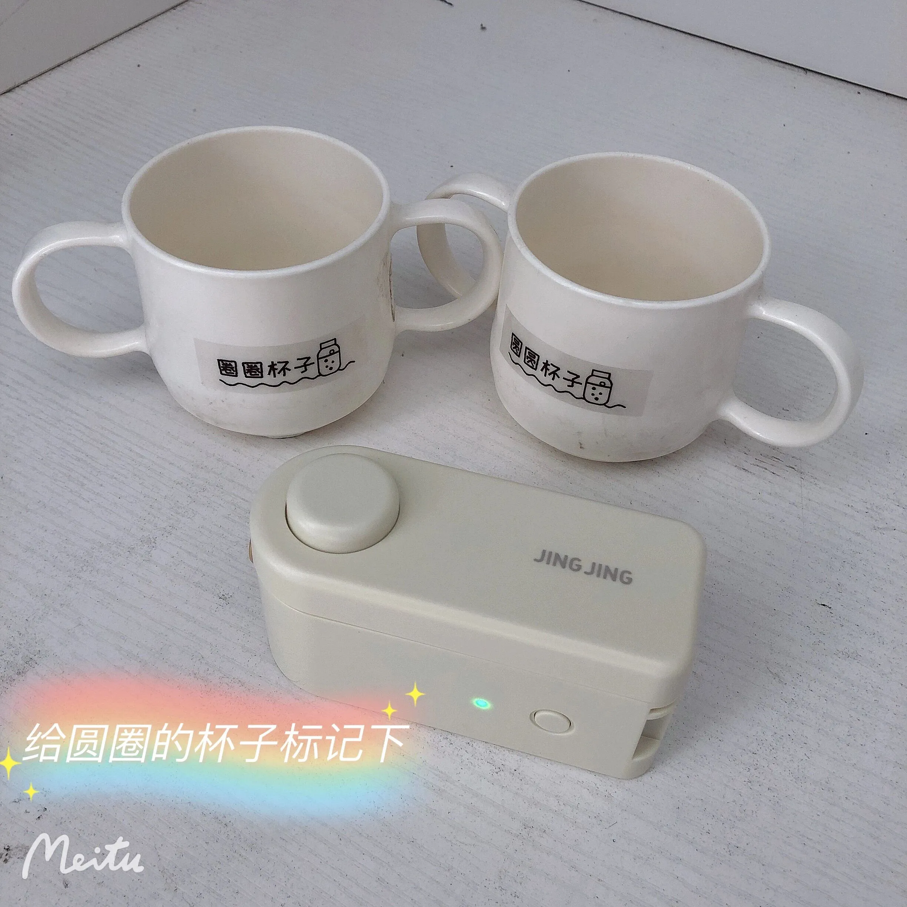
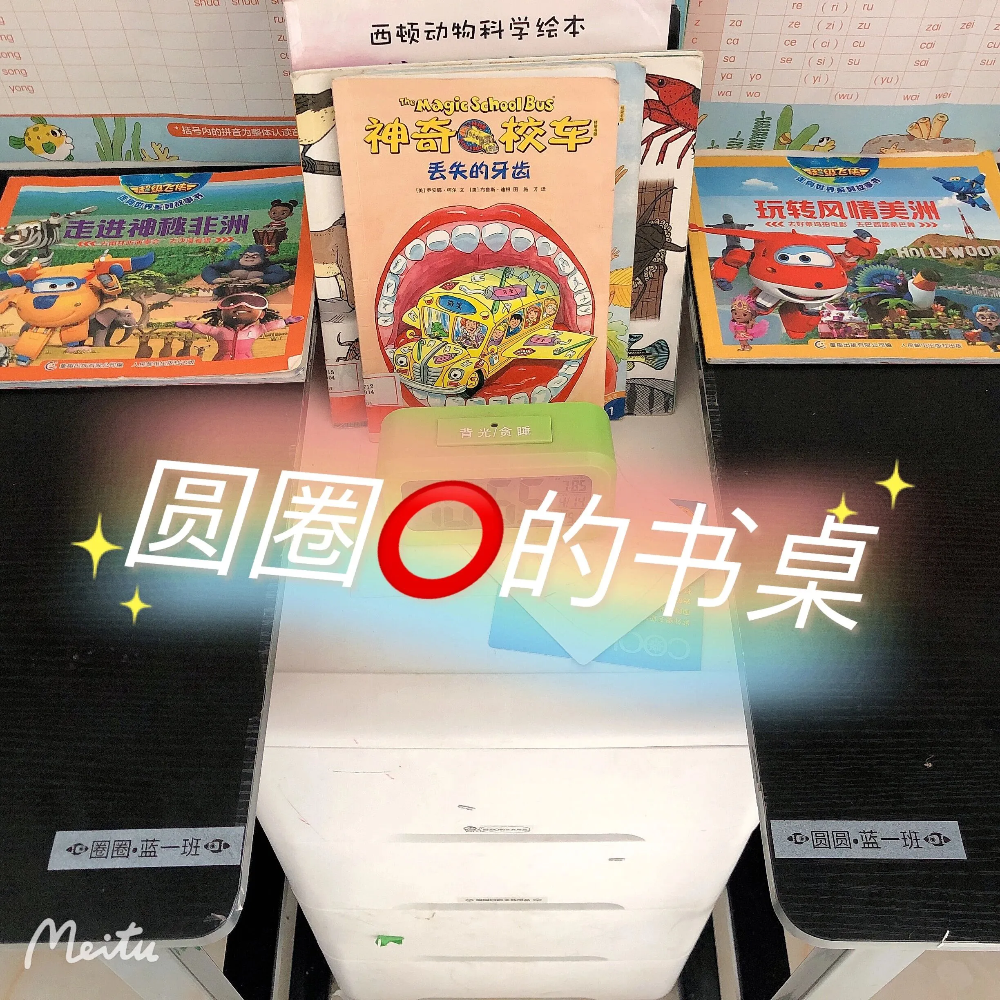
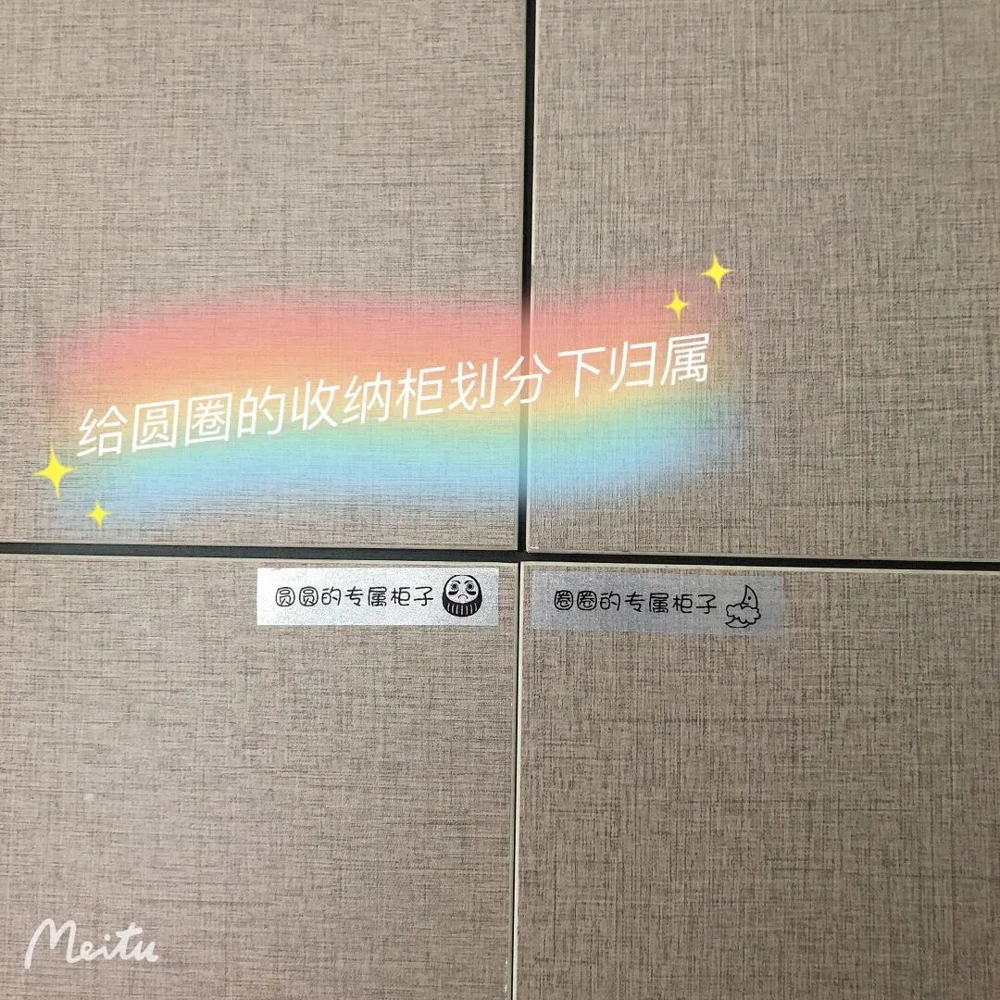
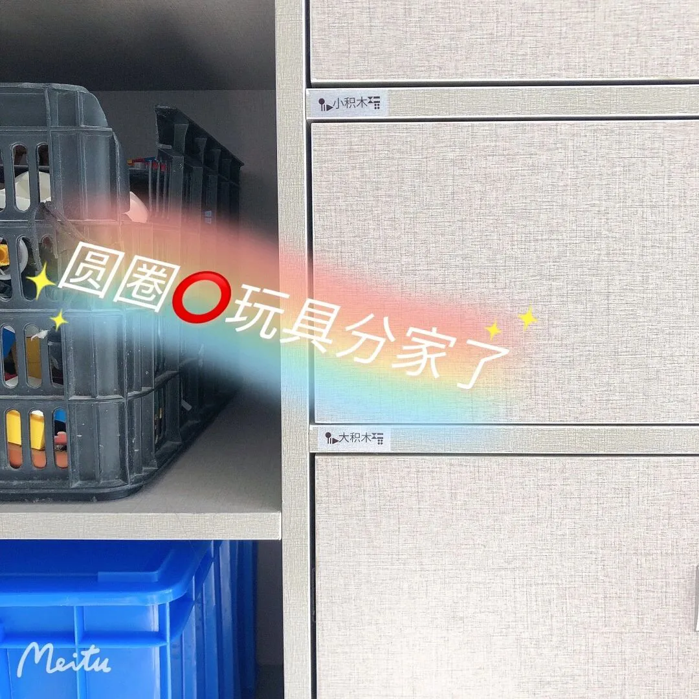
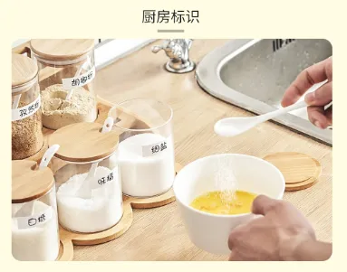
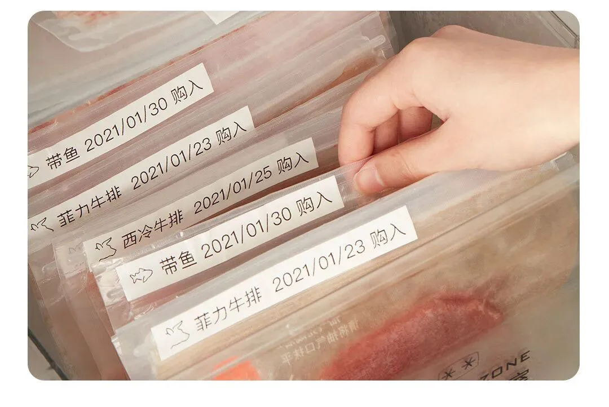
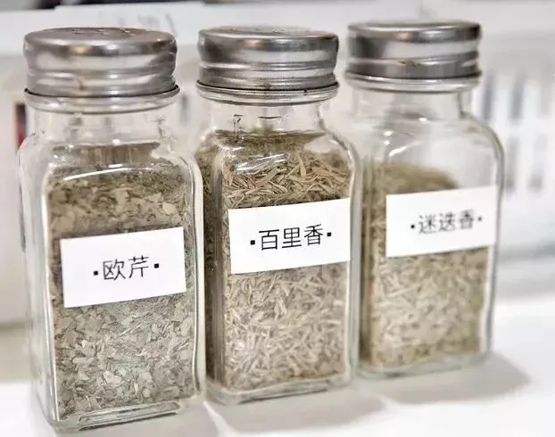
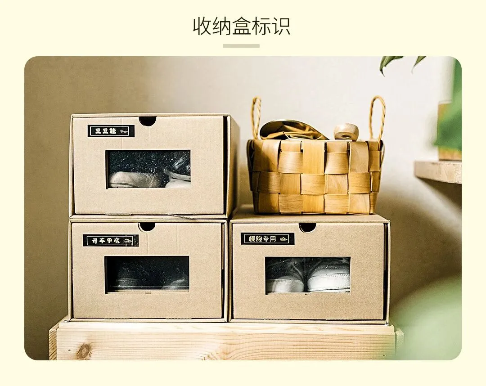
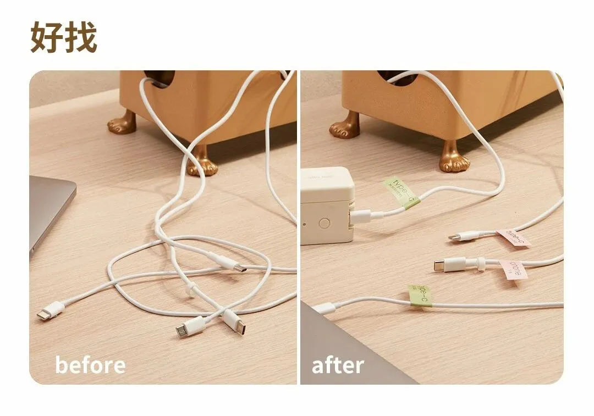
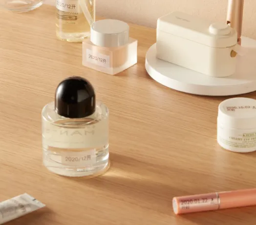